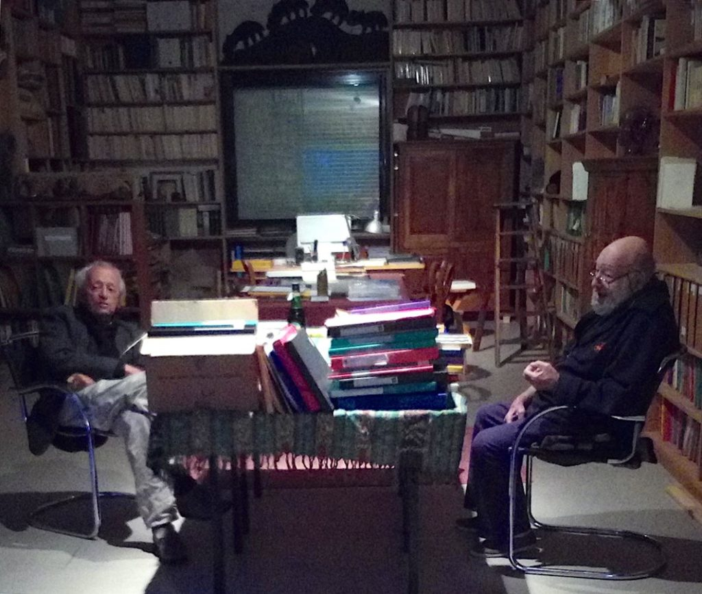

ㅤ

브뤼노 루아, 베르나르 노엘
베르나르 노엘: 브뤼노, 우선은 처음부터 시작하는 편이 좋겠군요. 어떤 이들은 이 이름을 기묘한 이름을 지닌 두 사람의 결합으로 받아들이고, 또 어떤 이들은 파타 모르가나(Fata Morgana)라는 말 속에서 운명과 요정을 복수로 늘여놓은 듯한 울림을 듣기도 합니다. 하지만 중요한 건 아마 이런 이름을 우연히 고르는 법은 없다는 점이겠지요. 그 이름에 대해 설명해주시겠습니까?
브뤼노 루아: “파타 모르가나란 극도로 불안정한 현상으로, 대개 몇 분밖에 지속되지 않는다.” 1897년 『라 나튀르(La Nature)』에 나오는 정의입니다. 저는 이 정의가 아주 마음에 듭니다. 물론 10주년을 맞아 하는 말이기도 하지만요. 파타 모르가나는 분명 요정 모르간, 때로 호수나 메시나 해협에 나타나는 신기루의 이름, 그리고 브르통의 시를 함께 떠올리게 합니다. 하지만 제게 그것은, 저 자신도 잘 설명할 수는 없지만, 온갖 함축으로 가득한 이름입니다. 저는 그 이름에서 지중해와 덧없음, 운명, 초현실주의, 꿈을 봅니다.
베르나르 노엘: 당신도 알다시피 저는 늘 사람들이 자기 이름과 맺는 관계에 흥미를 느껴왔습니다. 이름이 공적인 자리에 놓이는 순간 어떤 어긋남이 생기기 때문입니다. 사람은 서명하는 자이기도 하고 동시에 또 다른 존재이기도 하지요. 서명하는 자는 자기 서명 안에 고정되지만, “다른” 존재, 곧 살아 있는 존재는 끊임없이 그 서명 바깥으로 미끄러져 나가며, 거기서 달아나기 때문입니다. 이제 당신은 10년째 “파타 모르가나”이면서 동시에 “파타 모르가나”가 아니기도 합니다. 오늘의 당신은 그것을 어떻게 살고 있습니까?
브뤼노 루아: 그런 질문에 어떻게 답해야 할까요? 이 얽힌 실타래를 어떻게 풀어내고, 제가 어디까지 파타 모르가나와 겹쳐 있는지 어떻게 설명할 수 있을까요? 다만 말씀드릴 수 있는 것은, 10년이 지난 지금도 저는 여전히 제 자신을 출판인이라고 느끼지 못한다는 점입니다. 저는 책을 만듭니다. 책들은 쌓여가고, 서로 사이에 어떤 관계를 엮어내며, 아마도 무언가를, 하나의 장소를 만들어내겠지요. 그러나 제게는 출판인을 규정하는 듯한 그런 기획도, 그런 야심도 없습니다. 제게 책을 만든다는 것은 하나의 “작은 예술”입니다. 손으로 하는 일과 지적인 작업, 창조와 실행이 뒤섞인 일이지요. 제게 그것은 요리나 도예와도 꽤 가까워 보입니다. 물론 어떤 문명에서는 요리가 하나의 의식이고, 일본에서는 도예가 주요한 예술이기도 합니다. 책을 만든다는 것은 끊임없이 새로워지는 경험입니다. 7년 전이나 8년 전에는 스스로에게 말하곤 했습니다. “2년이나 3년쯤 지나면 알게 되겠지.” 하지만 10년 동안 더듬어온 지금은, 제가 결코 알게 되지 못하리라는 걸 분명히 압니다. 다행스러운 일이지요. 만약 알게 된다면 그만둘 테니까요.
베르나르 노엘: 생각해보면, 제가 앞서 그 질문을 한 것도 결국은 어쩌면 이 질문에 이르기 위해서였는지도 모르겠습니다. 어쩌면 미리 그 질문을 견제해두려는 뜻도 있었겠지요. 파타 모르가나는 이미 하나의 역사이고, 그 역사는 우리의 관계 밑바탕에도 깔려 있습니다. 물론 우리의 관계는 또 다른 곳에도 놓여 있겠지만요. 그러니 우리가 그 역사를 비껴갈 수 있는 것처럼, 혹은 그 가장자리나 바깥에 설 수 있는 것처럼 굴기보다는, 당신이 그 이야기를 직접 들려주는 편이 낫지 않을까요?
브뤼노 루아: 그 역사에 대한 공적인 기록은 카탈로그에 나와 있습니다. 그 밖의 것에 대해서라면, 블랑쇼가 제게 쓴 말을 그대로 돌려드리고 싶기도 합니다. “책이 있다. 그 밖의 것은 아무것도 아니다.” 하지만 당신은 그런 말로는 만족하지 않겠지요. 그러니 주요한 이정표들만이라도 말씀드려보겠습니다.
1966년 가을, 몇몇 친구들과 함께 우리는 비영리 단체 파타 모르가나를 만들었습니다. 분위기로 보자면 다소 후기 초현실주의적이었고, 첫 책으로 로제 질베르르콩트(Roger Gilbert-Lecomte)의 『공공의 독살자 모르페 씨(Monsieur Morphée empoisonneur public)』를 냈습니다. 그보다 18개월 앞서 뱅자맹 페레(Benjamin Péret)의 소책자가 먼저 나오긴 했습니다. 다만 그 책은 친구 장폴 기베르(Jean-Paul Guibbert)가 판형과 지면 구성을 맡았지요. 그때의 제 기술적 무지는 지금 돌이켜보면 놀라울 정도였습니다. 그래서 『공공의 독살자 모르페 씨』는 피해야 할 모든 실수를 한데 요약한 책처럼 보입니다.
그런데도 1967년에는 로제 카이와(Roger Caillois)와 막스 에른스트(Max Ernst), 이어 앙드레 피에르 드 망디아르그(André Pieyre de Mandiargues), 앙드레 마송(André Masson), 자크 에롤드(Jacques Hérold) 같은 이들이 우리와 함께 작업하기로 해주었습니다. 또 그해는 『르 그랑 주(Le Grand Jeu)』의 이름 아래 당신을 처음 만난 해이기도 했지요.
1968년의 들끓는 분위기 속에서 우리는 마타(Matta), 알레생스키(Alechinsky), 뷔토르(Butor), 뒤푸르(Dufour), 이푸스테기(Ipousteguy), 모리스 로슈(Maurice Roche), 드니 로슈(Denis Roche), 기요타(Guyotat)를 알게 되었고, 그들과 함께 『열사병들(Les Insolations)』과 포스터들을 만들었습니다.
1969년 봄에는 아주 개인적인 하나의 사건, 곧 제 결혼이 적지 않은 변화를 가져왔습니다. 마리조(Marijo)가 표지에 선명한 색을 입히기 시작했고, 판형 구성에도 개입했으며, 텍스트를 고르는 데에도 적극적으로 참여하게 되었으니까요.
1971년 말에는 처음 함께했던 동료들 가운데 끝까지 저와 일을 나누고 있던 유일한 사람, 클로드 페로(Claude Féraud)마저 물러났습니다. 저는 혼자 남았지요. 잠시 모든 걸 그만둘까 망설이기도 했지만, 결국 그 도전이 저를 자극했고, 그래서 더 크고 더 어렵고 더 많은 책들로 뛰어들게 되었습니다. 또 스콜리(Scholies) 총서를 통해 에세이의 비중도 더 키웠습니다.
1972년 7월 파르마에서 보도니(Bodoni)를 만난 일은, 그때까지만 해도 그에 대해 피상적인 지식밖에 없던 제게, 그야말로 커다란 충격이자 계시였습니다. 그전까지 제게 타이포그래피란 G.L.M과 엘제비르(Elzevirian) 계열 활자뿐이었으니까요. 그곳에서 전혀 다른 무엇을 발견했습니다. 그 발견은 제가 그전까지는 대수롭지 않게 여겼던 낭만주의 계열 타이포그래피, 이를테면 피숑(Pichon), 종키에르(Jonquières), 복스(Vox), 오몽(Haumont)을 완전히 다른 눈으로 보게 만들었습니다. 그렇게 해서 두즈(Douze) 총서가 태어났습니다.
1973년 1월, 국립현대예술센터(CNAC)에서 열린 피에르 르퀴르(Pierre Lecuire)의 책 전시는 제게 또 다른 종류의 충격이었습니다. 타이포그래퍼라기보다 거의 신비주의자에 가까운 그의 작업을 통해, 저는 많이 만드는 것이 아무 의미도 없으며, 제가 그동안 권수와 수량에만 빠져 허우적대고 있었다는 사실을 깨달았습니다. 그런 방식으로는 결코 어떤 인식에도 다가갈 수 없으리라는 것도요.
그래서 저는 훨씬 더 야심차고 전혀 다른 종류의 작업을 요구하는 책들을 준비하기 시작했습니다. 피에르 탈코(Pierre Tal Coat)와 토레유(Torreilles)의 『씻겨난 공간(Espace déluté)』, 앙리 미쇼(Henri Michaux)의 『리듬의 길로(Par la voie des Rythmes)』, 알레생스키와 뷔토르의 『암모나이트의 꿈(Le Rêve de l’Ammonite)』, 우박(Ubac)과 슈나이더(Schneider)의 『지속을 가로질러(À travers la durée)』, 타피에스(Tapiès)와 자베스(Jabès)의 『제 갈 길을 가다(Ça suit son cours)』가 그것입니다. 이 책들과 몇 권의 다른 책들이 꼬박 3년 동안 저를 붙들어두었습니다.
그와 동시에 1974년부터는 이른바 “대형 출판”의 지속적인 퇴락 때문에, 저는 삽화 없는 150쪽, 200쪽짜리 더 큰 책들까지 맡게 되었습니다.
지금 제가 서 있는 자리는 바로 그런 곳입니다. 사정이 저로 하여금 이런 결산을 하게 만들었고, 그 결과 저는 약간의 거리를 두고 싶어졌습니다. 내년에는 책을 많이 만들 생각이 없습니다. 이미 너무 많이 만들었으니까요. 그보다는 제 작업을 더 깊게 밀고 들어가고 싶습니다. 작업을 구성하는 재료들을 지금보다 더 잘 다루는 쪽으로 말입니다.
베르나르 노엘: 당신은 이미 알려진 작가들의, 이미 완성되어 있던 텍스트들, 그것도 잡지에만 발표되었던 글들을 자주 골라왔고, 그 때문에 비판을 듣기도 하지요. 당신에게 그런 재출간이 어떤 의미를 지니는지, 또 파타 모르가나의 목록에 발견보다 유명한 이름이 더 많은 이유가 어디까지는 취향이고 어디까지는 필요인지, 그 점을 말해주면 좋겠습니다.
브뤼노 루아: 저는 그런 비판이 정당하다고 생각하지 않습니다. 카탈로그에는 아직 널리 알려지지 않은 이름들도 많이 들어 있습니다. 우선 백 권 남짓한 책 가운데 첫 책이 열한 권이나 됩니다. 어떤 경우에는 그 저자들이 잡지에조차 글을 발표한 적이 없었지요. 꽤 괜찮은 비율이라고 생각합니다. 다만 그런 책들은 아무도 눈여겨보지 않습니다. 비평가들은 아무 말도 하지 않고, 서점들은 주문조차 하지 않지요.
브뤼노 루아: 그다음에는 나중에야 유명해진 이들이 있습니다. 역설적으로 죽은 작가들만 예로 들자면, 1966년에 로제 질베르르콩트에 관심을 가진 사람이 얼마나 있었겠습니까. 1967년에 세갈렌에 관심을 가진 사람은 또 얼마나 있었겠고요. 당신도 알다시피, 거의 없었습니다. 마지막으로, 우리가 드나드는 작은 무리 안에서는 잘 알려져 있고 존경도 받지만, 그 바깥에서는 거의 알려지지 않은 사람들도 있지요.
브뤼노 루아: 그렇다 해도 제 첫째 목적이 발견에 있는 것은 사실 아닙니다. 저는 제가 사랑하는 것을 출간하려고 할 뿐입니다. 그리고 처음부터 언젠가는 제게 “결정적인 동시대인들”인 몇몇 작가들과 함께 작업하고 싶다는 바람이 있었습니다. 그 가운데 다섯이나 여섯과는 실제로 그 기쁨을 누렸지요. 아직 출간하지 못한 이들이 셋, 넷이 더 있지만 저는 포기하지 않았습니다. 게다가 그것이 무의미하다고도 생각하지 않습니다. 제가 출간하는 책들 전체에 어떤 음색 같은 것을 부여해주고, 새로운 텍스트들을 하나의 맥락 안에 놓이게 해줄 뿐 아니라, 오래된 잡지 속에 묻혀 있던 텍스트들이 전혀 다른 방식으로 읽히게 되기도 하니까요. 때로는 그 저자 자신에게조차 그렇게 읽히기도 합니다.
베르나르 노엘: 당신이 함께 작업한 화가들이 대체로 무명이라고는 할 수 없을 겁니다. 당신의 작업에서 삽화는 어떤 자리와 기능을 차지합니까? 또 수집가로서의 몫과 출판인으로서의 몫은 각각 어느 정도입니까?
브뤼노 루아: 그 점도 사실과 다릅니다. 제가 함께 작업한 화가가 대략 쉰 명쯤 되는데, 그중 열다섯은 책 작업을 한 적이 한 번도 없었습니다. 그리고 나머지 이들에게도 종종 다른 방식의 작업을 요구했지요. 새로운 기법을 시도해달라거나, 다른 판형으로 가보자거나 하는 식으로요. 하지만 여기서도 제가 먼저 추구하는 것은 발견이 아닙니다. 군사 개념 같은 “아방가르드”라는 말은 전혀 이해되지 않습니다. 제게 중요한 것은 텍스트와 화가의 만남입니다. 대개는 텍스트가 먼저 오지만, 언제나 그런 것은 아닙니다. 어떤 책은 판화 연작에서 출발하기도 하고, 또 어떤 경우에는 화가와 작가가 함께 작업하고 싶다는 욕망이 출발점이 되기도 하지요. 어쨌든 책의 성패는 그 만남의 진정성과 깊이에 달려 있습니다. 두 작업이 서로 융합되지 못하고 나란히만 남아 있다면, 그것은 실패입니다. 다만 한 가지는 덧붙여야겠습니다. 이런 종류의 책은 비용이 너무 많이 들고, 판매도 너무 불확실합니다. 그래서 무명의 화가와 이런 모험을 너무 자주 감행하는 것은 무책임한 일일 수밖에 없습니다. 저도 그 파산적인 경험을 여러 번 해보았으니까요.
베르나르 노엘: 끝으로, 그리고 정리하는 뜻에서 묻겠습니다. 당신은 출간할 텍스트를 어떻게 고릅니까?
브뤼노 루아: 철저히 주관적으로 고릅니다. 어느 순간에 제가 출간하고 싶어지는 것, 바로 그것입니다. 잘 아시다시피, 아무리 얇은 소책자 하나라도 결국 몇 주 분량의 작업입니다. 그리고 그 일은 오롯이 제가 혼자 해야 하지요. 그러니 제가 정말 하고 싶어야 합니다. 제가 만든 책들 사이에서 분명하게 보이는 유일한 연결고리가 있다면, 그건 저 자신입니다. 그래도 몇 가지 “객관적인” 공통점은 있다고 생각합니다. 소설은 없고, “메시지”도 없고, “자료”도 없습니다. 대신 짧고 밀도 높고 분류하기 어려운 텍스트들이 있지요. 시와 에세이와 서사의 경계에 걸쳐 있으면서, 저자들이 자기 자신을 걸고 들어가는 글들 말입니다. 아마 사서들이 난감해하면서 “문학”이라는 분류 아래 꽂아버리는 종류의 글들이겠지요. 반어법으로 말입니다.
베르나르 노엘(Bernard Noël): 당신이 출간하는 책들이 조금씩 당신의 “이상적인” 서재를 이루어간다고 말할 수 있을까요? 아니면 상황이 크게 작용하기 때문에, 이 책이나 저 책을 내놓은 일을 뒤늦게 후회하기도 합니까?
브뤼노 루아(Bruno Roy): 아니요. 파타 모르가나의 카탈로그가 제 “이상적인” 서재를 이룬다고는 전혀 말할 수 없습니다. 우선 지금이라면 더 이상 출간하지 않을 책들이 있습니다. 지나고 나서 돌이켜보면 너그럽지 않게 판단하게 되는 시기의 산물들이지요. 하지만 그게 본질적인 문제는 아닙니다. 그리고 전체적으로 보면 그런 책은 그리 많지도 않습니다. 무엇보다도 문제는 거기에 없는 것들입니다. 아직 출간하지 못한 “결정적인 동시대인들”이 있고, 당신이 굳이 이름을 원한다면 에밀 시오랑(Emil Cioran), 롤랑 바르트(Roland Barthes), 마르그리트 유르스나르(Marguerite Yourcenar), 쥘리앵 그라크(Julien Gracq), 귀스타브 루드(Gustave Roud)를 들 수 있겠지요.
물론 그 밖에도 더 있습니다. 또 제가 하는 작업과는 맞지 않는 텍스트들도 있습니다. 소설, 에세이, 번역서, 큰 분량의 책들 말입니다. 여러 이유로 그런 책들은 다른 곳에서만 출간될 수 있지만, 독자로서의 제게는 꼭 필요한 책들입니다. 마지막으로, 제가 너무 늦게 도착한 탓에 출간할 수 없었던 책들이 있습니다. 프랑스 20세기만 놓고 보더라도 앙드레 지드(André Gide), 마르셀 프루스트(Marcel Proust), 발레리 라르보(Valery Larbaud), 샤를알베르 생그리아(Charles-Albert Cingria), 앙드레 브르통(André Breton)이 그렇습니다. 그리고 저는 흔히 “살아 있는” 많은 이들보다 오히려 그런 작가들에게 더 가까움을 느끼곤 합니다. 그렇다 해도 적어도 3분의 2에 대해서는, 내가 출간한 것들과 동일시되는 일을 받아들일 수 있습니다.
베르나르 노엘: 파타 모르가나는 실제로 어떻게 운영됩니까? 텍스트를 고르는 일에서부터 서점으로 책이 발송되기까지, 당신이 떠맡고 있는 모든 일을 설명해주셨으면 합니다.
브뤼노 루아: 우선 말씀드렸듯 파타 모르가나는 1901년 법에 따라 운영되는 비영리 단체입니다. 그런데 이 법은 오히려 너무 느슨하지요. 그래서 저는 제 나름대로 조금 더 엄격한 원칙을 세웠습니다. 이익을 남기지 않는 것은 물론이고, 직원도 두지 않는다는 원칙입니다. 저 자신조차도 예외가 아닙니다. 당신도 알다시피 저는 공무원이니까요. 저는 이런 안전장치가 유익하다고 믿습니다. 다른 차원에서 보더라도, 인간적인 규모를 지켜낸 출판인이 얼마나 되겠습니까.
제게 같은 세대에서 떠오르는 사람은 제롬 랭동(Jérôme Lindon) 하나뿐이고, 그의 엄정함은 정말 본받을 만하다고 생각합니다. 운영 방식은 단순합니다. 해야 할 일이 있으면 제가 합니다. 텍스트 선정, 더미 제작, 조판과 면 구성, 인쇄가 모두 그렇습니다. 인쇄가 진행되는 동안 저는 줄곧 인쇄소에 있습니다. 교정쇄를 바로잡아야 하고, 작업의 질도 살펴야 하지만, 마지막 순간까지 지면 구성을 손볼 수 있다는 점에서도 그게 필요하지요. 때로는 접지와 제본까지 직접 합니다. 그리고 또 다른 한편의 일도 있습니다. 안내 전단을 쓰고 발송하는 일, 청구서, 회계, 포장 발송 같은 일들입니다. 흥미롭지않은 후자의 일이 사실은 전체 시간의 거의 절반을 차지합니다. 무겁지요. 지나치게 무겁습니다. 하지만 작업의 모든 단계에 참여하고, “창조”와 “실행”을 갈라놓지 않는 것은 좋은 일입니다. 대형 출판사 사람들이 제 손으로 직접 포장 발송을 했다면, 쓸데없는 책을 지금보다 훨씬 덜 냈을 겁니다.
베르나르 노엘: 방금 당신은 읽기에서 읽기의 대상에 이르기까지, 자신의 작업이 무엇으로 이루어지는지 설명했습니다. 저는 “창조”라는 말을 경계합니다. 그 말은 늘 엘리트주의적으로 쓰이기 때문이지요. 저는 차라리 “노동”과 “즐거움”이라는 말로 그 자리에 들어가고 싶습니다. 그러니 당신이 묘사한 그 작업이 당신에게 어떤 즐거움을 준다고, 그리고 그 노동과 즐거움의 이중적 작용 속에 당신이 책을 “창조하는” 이유가 놓여 있다고 생각해보겠습니다. 그렇다면 여기서 이런 질문을 하고 싶군요. 당신에게 책이란 무엇입니까? 우리가 책이라고 부르는 이 물건 말입니다.
브뤼노 루아: 노동이 즐거움의 다른 이름이 아니라면, 그것은 소외이고 예속일 뿐입니다. 그런 상투적인 자리에는 머물지 맙시다. 제가 하고 싶은 이중의 놀이는 거기에 있는 것이 아니라, 텍스트와 책이라는 물건 사이의 관계 속에 있습니다. 텍스트에 대해서는 다시 이야기하게 되겠지요. 책, 곧 책이라는 물건은―책-오브제라고 말하게 하지는 마세요. 그건 파리식 장식품에나 어울릴 법한, 터무니없는 오해니까요―너무 빠른 속도로 퇴락하고 있습니다. 10년 뒤에도 과연 여전히 그런 책을 만들 수 있을지 의문이 들 정도입니다. 생각해보세요. 해마다 모노타이프로 텍스트를 식자하는 일조차 점점 더 어려워지고 있습니다. 활자 주조소는 문을 닫고, 활자체와 활자 크기의 폭도 줄어들고 있습니다. 납활자가 앞으로 얼마나 더 버틸 수 있을까요?
이 모든 것은 포켓북이 모든 것을 오염시켰기 때문입니다. 재단, 코팅, 현란한 표지가 이제는 규범이 되어버렸지요. 하지만 분명히 말해둡시다. 포켓북은 책이 아닙니다. 그것은 다른 무엇입니다. 빠르고, 싸고, 금방 낡고, 어디서나 팔리며, 결국 책이라기보다는 신문에 더 가까운 물건이지요. 물론 저는 포켓북 자체에는 아주 찬성합니다. 다만 모든 걸 한데 뒤섞어서는 안 된다는 뜻입니다. 도식적으로 말하자면, 포켓북은 책과 달리 시청각 문화에 속합니다. 책은 다른 것입니다. 저는 소위 “예술서”를 말하는 게 아닙니다. 얼마나 바보 같은 표현입니까. 제가 말하는 것은 가장 보통의, 가장 일상적인 책입니다. 흰 종이의 여러 대지에 납활자로 인쇄하고, 그것을 접고, 실로 꿰매고, 소박한 표지 아래 단단히 제책한 것 말입니다. 아드리엔 모니에(Adrienne Monnier)가 가난한 책을 찬양하던 말을 떠올려보세요. 가난하지만 품위 있는 책 말입니다.
왜 이런 퇴락이 일어날까요? 기계화만이 원인은 아닙니다. 사물로서의 책과 텍스트 사이에는 밀접한 연관이 있습니다. 점점 더 많은 비-책들이 출간되고 있으니까요. 비-작가들이 만든, 서둘러 쓰인, 계절을 타는, 저널리즘적인 글들 말입니다. 당신도 아는 지드의 말처럼, “나는 오늘보다 내일 덜 흥미로운 것을 저널리즘이라 부른다”는 식의 글들 말이지요. 그런 것들에 걸맞은 외형이 주어지는 것은 당연합니다. 그러니 『무함마드 알리 회고록』 같은 책에 갈리마르의 그 절대적 걸작, 곧 흰 표지를 씌우는 일을, 출판사 쪽에 아직 남아 있는 막연한 가책이 그나마 막아주고 있다는 사실이 오히려 다행스럽습니다. 하지만 머지않아 그마저도 사라지지 않을까요?
베르나르 노엘(Bernard Noël): 사물로서의 책이 완성된 뒤에는 어떻게 유통되는지, 그 점에 대해서는 어떻게 생각하십니까? 요즘 출판에서 가장 큰 문제는 유통이라는 말을 끊임없이 듣습니다. 그런데 당신은 엄밀한 의미에서 유통망이 전혀 없지요. 서점들이 당신 책을 주문해오기를 기다릴 뿐이니까요. 그럼에도 점점 더 많은 서점이 당신 책을 주문하고 있습니다. 그렇다면 당신의 경험은 지금의 시스템이 잘못되었다는 걸 보여주는 것일까요? 아니면 출판사와 서점 사이의 또 다른 관계를 만들어가고 있는 걸까요?
브뤼노 루아: 출판이 워낙 심하게 망가져 있어서, 어떤 문제든 “가장 큰 문제”라고 불릴 수 있을 겁니다. 유통 말이지요. 1935년 무렵 스탠리 언윈(Stanley Unwin)도 이미 유통 비용의 상승을 걱정하고 있었습니다. 어떤 유통업자들은 33퍼센트의 할인율을 요구하지 않았던가요. 그런데 40년이 지난 지금은 60퍼센트에 이르렀습니다. 유통업자들과 몇몇 할인 판매업자들이 출판계의 4분의 3을 장악하게 된 것을 어떻게 놀랄 수 있겠습니까? 그럼 어떻게 해야 하느냐고요? 저도 모릅니다. 제 “경험”은 본보기로 삼을 만한 것이 못 됩니다. 저는 상업적 기준선보다 훨씬 아래쪽에 있기 때문입니다. 저는 진짜 서점들, 많아야 이백 곳쯤 되겠지요, 그들을 상대로 안내문과 편지, 개인적인 접촉을 통해 책에 대한 정보를 전달하는 일을 하고 있습니다. 흥미롭고, 또 꼭 필요한 일입니다. 하지만 그런 식으로 2년 동안 1,500부를 팔 수 있다면 그것은 엄청난 성공입니다. 책 한 권당 평균 판매량은 오히려 300부 쪽에 가깝습니다. 그래도 한 가지는 분명합니다. 유통 마진을 50퍼센트 안팎으로 되돌려놓지 못한다면, 단기적으로 문학은 죽게 될 겁니다.
베르나르 노엘: 당신이 말하는 진짜 책방 주인이란 어떤 사람입니까?
브뤼노 루아: 흥미로운 사람이지요. 자주 감탄하게 되는 사람이고, 어쨌든 없어서는 안 될 사람입니다. 또 드물기도 하고, 지금 이 순간에는 걱정거리도 무척 많은 사람이지요. 우선은 책을 읽는 사람입니다. 책이 무엇인지 알고, 재고를 갖추고 있는 사람이지요. 배본된 책을 받아 쌓아두는 데 그치지 않고, 출판사 목록을 알고, 20년 전에 나온 책도 자기 서가에 계속 올려두는 사람 말입니다. 프랑스에 그런 사람이 백 명이나 있는지 저는 확신하고 싶습니다. 10년 뒤에도 그중 쉰 명은 남아 있기를 바라고요.
베르나르 노엘: 나는 자주 당신의 책들이 비싸다는 말을 들었습니다. 하지만 요즘은 그런 말을 덜 듣게 됩니다. 이제는 모든 책이 다 비싸게 느껴지기 때문이지요. 책값이 어떻게 계산되는지, 그리고 그런 비판에 대해 당신은 어떻게 생각하는지 설명해주실 수 있겠습니까?
브뤼노 루아: 책이 비싸다고 말하는 사람들은 식사 한 번, 공연 한 번, 주말 여행 한 번에 가장 비싼 책값보다 훨씬 더 많은 돈을 아무렇지 않게 씁니다. 그러니 가격 논쟁은 별 의미가 없습니다. 출판사 목록에는 10프랑, 15프랑짜리 책이 넘쳐나지만, 그런 책들은 45프랑짜리 “여름의 책”보다 백 배는 덜 읽히니까요. 출판사의 일반 경비, 말하자면 쓸데없이 많은 인력에 들어가는 비용과 유통 비용을 줄일 수만 있다면 책값은 조금 더 낮아질 수도 있을 겁니다. 반면 서점 마진은, 적어도 그들이 제공하는 서비스를 생각하면, 정당합니다. 물론 여기서 제가 말하는 것은 진짜 서점이지, 아무런 서비스도 제공하지 않는 “판매점”이 아닙니다. 그런 의미에서 저는 할인 판매에 반대합니다. 장기적으로 매우 위험하다고 보기 때문입니다. 프낙(FNAC)은 의심할 여지 없이 프랑스 최고의 서점 가운데 하나지만, 그 역시 할인 없이도 충분히 운영될 수 있을 겁니다. 그러나 프랑스의 책값은, 다른 공산품들과 비교해도, 또 출판이 국가 독점이 아닌 다른 나라들과 비교해도, 그렇게까지 비싼 편은 아닙니다. 제 책들에 대해서 말하자면, 모든 조건을 감안해도 평균보다 훨씬 덜 비쌉니다. 아시다시피 출판사들은 제작 원가에 어떤 계수를 곱해 판매가를 정합니다. 그 계수에는 일반 경비, 저작권료, 세금, 유통 비용이 모두 들어가지요. 출판사와 총서에 따라 다르지만, 대개 그 수치는 6 정도입니다. 하지만 저는 일반 경비도 없고 유통업자도 없기 때문에 2.2에서 4 사이로 맞출 수 있습니다. 물론 700부 남짓한 소량 인쇄에, 삽화도 있고, 괜찮은 종이를 쓰고, 손제본까지 하다 보면 제작 원가는 평균보다 훨씬 높아집니다. 그래서 제 책들이 다른 책들보다 더 싸지는 않은 것이지요.
베르나르 노엘: 파타 모르가나 이야기가 나오면 사람들은 늘 이렇게 말하더군요. “아, 저 사람은 아름다운 책을 만들잖아!” 당신에게는 책을 “아름답게” 만들고자 하는 마음이 있습니까?
브뤼노 루아: “아름답게 만든다”는 말은 아무 뜻도 없습니다. 제가 추구하는 것은 정확함입니다. 언젠가 거기에 이르게 되면, 아름다움은 저절로 따라오겠지요. 저는 사물로서의 책을 매우 중요하게 생각합니다. 가독성은 거기에 달려 있으니까요. 당신도 자주 겪어보았겠지만, 텍스트는 그것이 원고일 때, 타자 원고일 때, 신문에 인쇄되었을 때, 포켓북일 때, 그리고 책일 때, 전혀 다른 방식으로 읽힙니다. 그래서 이 선집 이야기가 처음 나왔을 때 저는 무척 흥분했습니다. 제가 전혀 다른 방식으로 지면을 구성했던 텍스트들을 여기서 다시 읽게 된다는 사실이 몹시 궁금했기 때문입니다.
책은 우선 흰색입니다. 무게와 색조, 판형과 질감을 지닌 흰 종이. 그 위에 텍스트를 얹는다는 것은 활자체와 활자 크기, 행간과 정렬 방식을 선택한다는 뜻입니다. 활자체는 매우 중요합니다. 하지만 복스가 말하곤 했던 “지면 구성”은 그보다 어쩌면 더 중요할지도 모릅니다. 여백이 정확하지 않으면 아무것도 서지 못합니다. 그리고 이 모든 것은 텍스트를 떠받치고, 그것을 섬기며, 스스로 사라져야 합니다. 그래서 마침내 텍스트의 투명함만이 남게 되어야 하지요. “이미지”도 마찬가지입니다. 그것은 스스로를 내세워서는 안 되고, 페이지 안에 친밀하게 참여해야 합니다. 책을 만든다는 것은 즉흥성이나 자발성과는 정반대의 일입니다. 그렇지만 불꽃 하나가 없으면 모든 것은 실패입니다. 아무것도 살아나지 않지요. 레옹 피숑(Léon Pichon)의 책들은 거의 모두 기술적으로는 정확합니다. 그러나 제 생각에 그 어느 책에도 천재성은 없습니다. 반면 일리아즈드(Illiazd)는 늘 천재성이 있습니다.
베르나르 노엘(Bernard Noël): 책이라는 사물, 그것의 외양과 형식, 또 유통에 대해 이야기하다 보면, 결국 다시 저자에게로 돌아오게 됩니다. 당신은 출판과 서점에 대해 말했으니, 이제 글쓰기 자체에 대해서도 조금 말해주시겠습니까?
브뤼노 루아(Bruno Roy): 출판인이라는 존재는 대개 실패한 작가인 법이라, 글쓰기에 대해 말하기엔 썩 적절한 위치에 있지 않습니다. 그렇다 해도 요즘 유행하는 “그것은 쓰인다” 같은 식의 말투는, 예전의 유행이던 마술사나 불을 훔친 프로메테우스 같은 작가상만큼이나 저를 거슬리게 합니다. 제 생각에 글쓰기란 본질적으로 신경증과 영감과 노동 사이에서 균형을 잡으려는, 다소 절박한 시도입니다. 존재할 수 없다는 자신의 무능력을 사회화하는 하나의 방식이기도 하지요. 그러나 그 안에도 얼마나 많은 모순이 있습니까. 작품의 부재, 이를테면 질베르르콩트의 경우가, 제게는 브르통의 절대적 주권만큼이나 매혹적입니다. 결국 제가 흥미를 느끼지 않는 것은 소설적인 것과 메시지입니다. “시인에게는 자기 시대의 나쁜 양심이 되는 것만으로도 충분하다.” 어쩌면 그것조차 지나친 일인지도 모르지요. 사회적으로 회수 가능한 글쓰기라니요…
베르나르 노엘: 그렇다면 작가의 권리에 대해서는 어떻게 생각하십니까?
브뤼노 루아: 요즘은 권리에 대한 이야기가 너무 많습니다. 무엇보다도, 다들 엉뚱한 자리에서 그 말을 하고 있지요. 많은 이들이 “권리”라고 주장하는 것은, 실은 사회가 자기를 책임져주기를 바라는 데 더 가깝습니다. 복지국가는 가장 교묘한 방식으로 전체주의적입니다. 작가가 사회적으로 인정받고, 통합되고, 유용하며, 모범적인 노동자로 간주되는 사회일수록, 자유는 오히려 더 철저히 부재합니다. 글쓰기든 다른 영역이든, 엄격함은 권력과 잘 공존하지 못합니다. 권력은 부패시키지요. 특히 글쓰기를 부패시킵니다. 어떤 권력이든, 그 권력으로부터 인정을 받는 일은 작가에게 득보다 실이 더 크다고 믿습니다. 그렇다고 해서 좀 더 산문적인 차원에서 보았을 때, 표준 계약서에 허점과 남용이 많다는 사실까지 부정하려는 것은 아닙니다. 다만 작가와 출판사의 관계를 계급투쟁의 언어로 파악하는 것, 저는 그것이 아주 심각한 오류라고 생각합니다. 파타 모르가나의 처지와 가난은 이런 문제를 두고 말하기에 저를 오히려 더 편하게 만들어줍니다. 그러나 그런 방식으로 문제를 제기한다면 다시 한번 문학에 치명적일 것입니다.
베르나르 노엘: 당신은 자기 책이 어떻게 만들어지는가에 관심을 기울이는 거의 유일한 작가, 미셸 뷔토르(Michel Butor)를 출간하고 있지요. 그 점이 그를 만나고, 그를 출간하고 싶게 만든 이유 가운데 하나였습니까?
브뤼노 루아: 당신은 너무 비관적이군요. 미셸 뷔토르는 작가들 가운데서도 드물게 책, 곧 책이라는 물건 자체에 대해 잘 알고 있는 사람입니다. 그건 사실이지요. 그리고 분명 그것이 제가 그와 함께 작업하는 데서 큰 기쁨을 느끼는 이유 가운데 하나이기도 합니다. 하지만 그런 작가가 그 사람 하나뿐인 것은 아닙니다. 물론 저는 때때로 어떤 작가들의 완전한 무지에 놀라고, 충격을 받기도 했습니다. 하지만 많은 경우, 그런 무지는 “큰 출판사들”에서는 저자가 거의 자문을 받지 못하고, 인쇄소에도 가보지 못하는 데서 비롯됩니다. 하긴 출판인 자신이 인쇄소에 가기나 하겠습니까. 그리고 저와 함께라면 책 만드는 과정에 직접 참여할 수 있다는 가능성이, 어떤 이들이 제게 원고를 맡기기로 결심한 데 적지 않게 작용했다고 저는 생각합니다.
베르나르 노엘: 작가들은 늘 자기 책이 만들어지는 일을 남에게 맡깁니다. 심지어 자비 출판을 할 때조차도 말이지요.
브뤼노 루아: 그건 잘못입니다. 그것은 분명 우리 문화 안에 깊게 박혀 있는, 손노동과 지적 노동 사이의 깊은 단절과 관련이 있을 겁니다. 어쩌면 제가 지나치게 이상주의적일지도 모르지만, 이 둘의 통일을 되찾을 희망은 중국의 이론가들에게서보다 일본 도공들의 가르침 속에서 더 많이 봅니다. 그렇지만 작가들이 출판사와의 관계 속에서는 그런 무지에 대해 어느 정도 변명의 여지가 있다 해도, 자비 출판의 경우만큼은 정말 그럴 수 없습니다. 이 문제에 대해서는 할 말이 많습니다. 어떤 형태로든 저자에게 자기 텍스트를 출간하는 대가를 치르게 하는 것은, 출판인의 행위가 아닙니다. 그런 장사를 하는 사람이 아주 정직하고 점잖을 수도 있겠지요. 그러나 그는 출판인이 아니며, 스스로를 그렇게 부를 권리도 없어야 합니다. 너무 많은 글이 쓰이고 있습니다. 거의 모든 것이 형편없지요. 출판사가 그 모든 것을 책임질 수는 당연히 없습니다. 그러니 자비 출판은 바람직한 최후의 수단일 수 있습니다. 그것이 금지된 나라들이야말로 전체주의 국가들이니까요. 그런데 작가가 굳이 자비 출판을 택할 생각이라면, 왜 곧장 인쇄소를 찾아가지 않는 겁니까? 자기 책의 물질적 형태를 스스로 결정할 수 있을 텐데요. 비용은 더 적게 들고, 아마도 덜 추할 것이며, 유통 역시 지금보다 나쁠 이유가 전혀 없을 겁니다.
베르나르 노엘(Bernard Noël): 우편으로 원고가 많이 들어옵니까? 그리고 그런 원고 더미를, 혹시 그 안에서 어떤 계시 같은 것을 발견할 수 있으리라는 기대를 품고 받아보십니까?
브뤼노 루아(Bruno Roy): 너무 많이 들어옵니다. 저는 모든 일을 혼자 해야 하니까, 아주 가혹한 결정을 내릴 수밖에 없었습니다. 그런 식으로 들어오는 원고는 거의 읽지 않고, 답장도 하지 않으며, 원고를 돌려보내지도 않습니다. 작가들이든 화가들이든, 일단은 낙담할 필요가 있다고 저는 확신하고 있어서, 그 일에 대해 별다른 양심의 가책도 없습니다.
베르나르 노엘: 왜 걸작은 그런 식으로, 말 그대로 미지의 곳에서 불쑥 솟아오르듯 도착할 수 없다고 생각하십니까?
브뤼노 루아: 왜 안 되겠습니까. 한 세기에 한두 번쯤은 가능하겠지요. 하지만 그것을 둘러싼 거름더미가 너무 거대합니다.
베르나르 노엘: 당신이 직접 이름을 올리고 싶었던 표지는 무엇입니까? 또 어떤 책들의 출판인이 되고 싶었습니까?
브뤼노 루아: 너무 많지요. 표지라면 무엇보다도 갈리마르의 흰 표지입니다. 점점 더 자주 그 절대적 걸작을 요란한 광고용 색채로 덮어버리고 있다는 사실을 생각하면 참 서글픈 일입니다. 하지만 멋진 표지는 이 세기 안에서만도 수없이 많습니다. 레미 드 구르몽(Rémy de Gourmont), 막스 엘스캉프(Max Elskamp), 베르누아르(Bernouard), 피숑, 메르모(Mermod), G.L.M―아, G.L.M!―칸바일러(Kahnweiler), 일리아즈드, 르퀴르, 마생(Massin), 포슈(Faucheux), 피에르 베르나르(Pierre Bernard)는 정말 놀라운 표지들을 만들어냈지요. 그리고 제가 지금 잊고 있는 다른 수많은 이들도 있습니다.
내가 출판하고 싶었던 책이 무엇이냐고요? 여기서 『말도로르의 노래(Les Chants de Maldoror)』나 『잃어버린 시간을 찾아서(À la recherche du temps perdu)』를 든다면 그건 별 의미가 없을 겁니다. 하지만 저는 『팔뤼드(Paludes)』, 『에드와르다 부인(Madame Edwarda)』, 『평원 걷기에 관한 소론(Le Petit Traité de la marche en plaine)』, 『로잔을 스쳐 지나가는 사람의 인상(Impressions d’un passant à Lausanne)』, 『갤리선(La Galère)』, 『죽음의 선고(L’Arrêt de mort)』, 『위대한 자유(Liberté grande)』, 『샤를 푸리에에게 바치는 송가(L’Ode à Charles Fourier)』, 『알렉시스 혹은 헛된 싸움에 관한 논고(Alexis ou le traité du vain combat)』 같은 책들을 낼 수도 있었으리라고 느낍니다. 그런 일은 터무니없지도, 불가능하지도 않았을 겁니다. 그리고 어쩌면 그런 책들도 제 곁에서 편안했을지 모르지요.
베르나르 노엘: 내게는 당신이 전복하기보다는 이어가기를 원한다는 느낌이 있습니다. 그러니까 당신은 어떤 발견보다는 이미 시작된 작품들, 이미 존재하기 시작한 작가들을 더 선호하는 것처럼 보입니다. 그것이 취향 때문인지, 아니면 저자들의 작업 전체와 견주어볼 때 다소 주변적인 위치에 있는 어떤 종류의 작품들에 자신을 한정하려는 의지 때문인지 궁금합니다. 어쩌면 당신이 하나의 텍스트를 자기 것으로 삼아, 그 위에 온전히 당신만의 물건을 만들 수 있는 여지를 원한다고 생각할 수도 있겠지요. 하지만 실은 그렇지 않습니다. 당신의 표지와 타이포그래피는 텍스트를 위해 봉사할 뿐, 텍스트를 자기 목적을 위해 이용하지 않으니까요. 거기에는 일종의 모호함이 있습니다. 마치 당신이, 드러내지 않은 채, 어떤 종류의 책이 제 자리를 찾을 수 있는 장소를 만들고 싶어 하는 것처럼 보인다는 말입니다. 그것도 오직 거기서만 제자리를 찾을 수 있는 책들을요. 그렇다면 그것은 어떤 종류의 책입니까? 또 당신이 아예 불러내고 싶은 책들도 있습니까?
브뤼노 루아: 그 생각은 마음에 듭니다. 이어간다는 것, 저는 그 말 속에서 제 자신을 기꺼이 알아봅니다. 저는 전복이라는 것을 그다지 믿지 않습니다. 그것은 언제나 이전 것과 닮은 새로운 폭정만을 낳을 뿐이니까요. 이어간다는 것은 삶 자체의 운동입니다. 모든 것을 파괴하는 것도 아니고, 이미 자리 잡은 무질서를 붙들어 유지하기 위해 몸을 굳히는 것도 아니며, 환상적인 황금시대로 되돌아가려는 것도 아니고, 허깨비 같은 “진보”의 선로 위를 미끄러져 가는 것도 아닙니다. 그저 늘 조금은 다른 곳을 향해 떠돌아다니는 것이지요.
당신이 말한 그런 장소가 정말 존재한다면, 저도 그러기를 바라는데요, 아마도 그것은 제가 시간을 수익으로 환산하는 일을 거부하기 때문일 겁니다. 당신이 책을 쓸 때를 생각해보세요. 당신은 시간을 들입니다. 책은 머릿속에서 익어가고, 당신은 쓰고, 지우고, 찢고, 때로는 몇 달씩 중단하기도 합니다. 그러다가 어느 아름다운 날, 책이 끝났다는 감각이 찾아오지요. 저도 마찬가지입니다. 저 역시 제 시간을 가져야 합니다. 타이포그래피, 판화, 종이 찾기, 교정쇄 같은 복잡한 요소들을 실제로 작동시키기 위해서만이 아니라, 모든 것이 제자리를 잡고, 책이 조금씩 몸을 얻어가기 위해서도 시간이 필요합니다.
어떤 이들은 이 점을 이해하지 못합니다. 자기 책이 충분히 빨리 나오지 않는다고 초조해하지요. 그들에게도 변명의 여지는 있습니다. 실제로 2년, 3년이 걸리기도 하니까요. 하지만 그런 사람들과는 저는 결코 진짜 책을 만들 수 없습니다.
다행히 당신처럼 그것을 받아들이는 이들도 있습니다. 그러면 우리 사이에는 단순한 “사업 관계”와는 전혀 다른 종류의 유대가 생겨납니다. 하나의 모험을 함께 나누는 일, 그리고 우정의 시작 같은 것이지요.
저는 제가 가진 이 다소 비켜난 자리와 느린 리듬이 충분히 살아 있고 따뜻해서, 텍스트들을 불러들이고, 또 존경하는 이들로 하여금 제가 그들에게서 읽고 싶은 책들을 쓰도록 이끌 수 있기를 바랍니다. 이를테면 장 스타로뱅스키(Jean Starobinski)의 서사, 롤랑 바르트(Roland Barthes)의 카바피스의 생애, 에드몽 자베스(Edmond Jabès)의 사막에 관한 에세이, 미셸 투르니에(Michel Tournier)의 지드 다시 읽기, 귀스타브 루드(Gustave Roud)의 빛에 대한 명상 같은 책들 말입니다.
© Éditions Fata Morgana, Union Générale d’Éditions, 1976